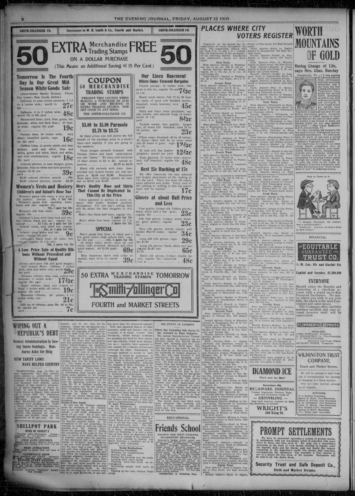

WIPING OUT A REPUBLIC'S DEBT
https://www.loc.gov/resource/sn85042354/1910-08-12/ed-1/?sp=8

See the original pageVer la página original
Honest Administration is Saving Santo Domingo. Honduras Asks for Help
NEW TARIFF LAWS HAVE HELPED COUNTRY
WASHINGTON, Aug. 11—The recent suggestion that this government assume a protectorate over Honduras and enter into a joint protectorate with Great Britian, France and Germany over Liberia, makes a review of this country's protectorate of Santo Domingo of timely interest. It will be recalled that the United States in March, 1905, entered into a treaty with the Dominican Republic to arrange its financial difficulties. The republic owed about $20,000,000, and its foreign creditors were pressing hard. Under a treaty, which the Senate reluctantly ratified, an American collector of customs was appointed for the republic, who received all customs receipts and divided them in the proportion of 45 per cent. for the republic and 55 per cent. for the creditors. Under the old Spanish law, which the Dominican republic never repealed, all expenses of the government are paid them for revenues derived from, imports and exports, property paying no taxes whatever.
In the five years that this government has assumed control of the Dominican custom-houses, the republic's debt has been reduced by $7,000,000 and the government, although receiving only 45 per cent. of the revenues has had more money to expend on administration and on public improvements than ever before when all the receipts went into the national treasury. The reason is not far to seek, for the American administration of the customs is honest. There have been naturally several abortive attempts at revolutions from hungry patriots whose souls shudder at the thought that the country's revenues are going into the country's treasury, but behind the American collector of customs, Mr. W. E. Pulliam, stands the American navy, and the net result of these revolutons has been only a decrease in the population of Santo Domingo, for those revolutionists who are not buried where they fall are safely tucked away in Dominican dungeons.
Result of New Tariff.
So well has Mr. Pulliam administered the revenues of the republic that a year ago last month he submitted a new tariff downward by about 15 per cent. Up to that time the Spanish principal of revenue taxation prevailed—namely, placing the heaviest possible duties on the necessities of life and permitting the luxuries to come in with the lightest possible duty. Mr. Pulliam introduced the American idea of letting the necessities of life come in free of duty, or nearly free, while the burden of taxation rested upon the luxuries. It was stipulated that an annual collection of $2,000,000 must be shown if the new tariff should remain in effect for more than a year. The tariff has now been adopted, and after a few months of a transition period, during which the business men of Santo Domingo adgusted themselves to new conditions, the receipts more than surpassed Mr. Pulliam's expectations. For the past three months the custom receipts have passed each month the quarter-million mark. At this rate the revenues for the current year will be at least $3,000,000, or one million more than the stipulated amount.
With this splended display of what American tariff and honesty will accomplish, it is small wonder that Honduras,, whose foreign creditors are pressing her hard for their money, and that Liberia, which faces dissolution as a republic, have appealed to this country for a similar protectorate. Although the State Department is strongly inclined to accede to both requests, it would be premature to say that the request will be granted. The Senate is bitterly opposed to any more such arrangements, although the example of Santo Domingo is encouraging. In the case of Liberia this country has only a sentimental interest, for Liberia owes its inception to American philanthropists.. It was the legislature of Maryland, whose generous appropriations nearly a century ago founded the Province of Maryland and peopled it with freed men from Maryland. The present republic if Liberia is a development of that settlement, but it is acknowledged on every hand that the republic is a failure. If this country enters into a joint protectorate with Great Britain, France and Germany, it will only mean a postponement of the fatal day.
No more Protectorates.
As for Honduras, a protectorate over that little republic would seem to be a logical corollary of the Monroe Doctrine, but the Senate, as already stated, is so bitterly opposed to any more of these treaties that Secretary Knox is at this moment unable to see his way clear to establishing a protectorate there. The Senate holds that if, following the example in Santo Domingo, this country takes up Honduras, it is only a question of time when an American receiver will be in charge of the customs of every petty republic in Central and South America, a condition not to be regarded with toleration.
How to cite this articleCómo citar este artículo
Evening Journal. (1910). Wilmington, Del., August 12, 191012 de agosto de 1910. DR in the American PressRD en la Prensa Norteamericana. Library of Congress, Chronicling America: https://www.loc.gov/resource/sn85042354/1910-08-12/ed-1/?sp=8
ReferencesReferencias
Library of Congress, Chronicling America: Evening Journal, August 12, 191012 de agosto de 1910.
Send an observationEnviar una observación
Does this article connect with your family, your town, or something you know? Did we get something wrong? Write to us. Observations go to the editor's inbox and are read by a person.¿Este artículo conecta con su familia, su pueblo o algo que usted conoce? ¿Nos equivocamos en algo? Escríbanos. Las observaciones llegan al buzón del editor y las lee una persona.
Send observationEnviar observación